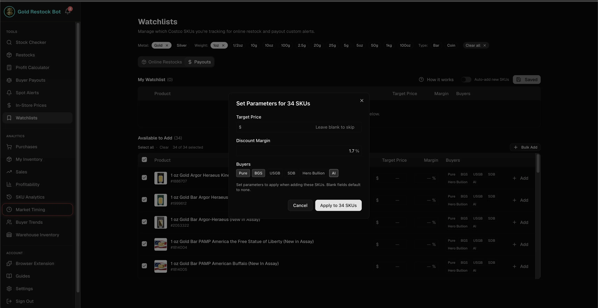
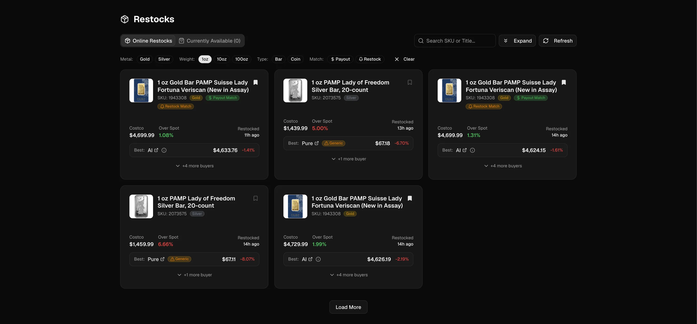
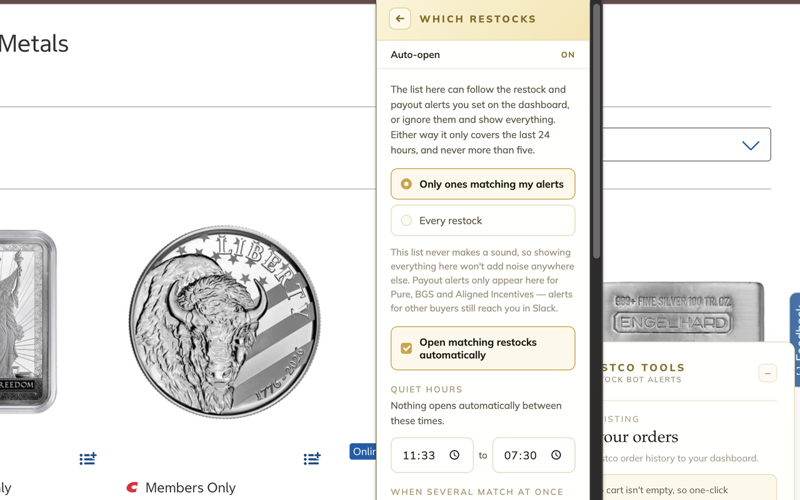
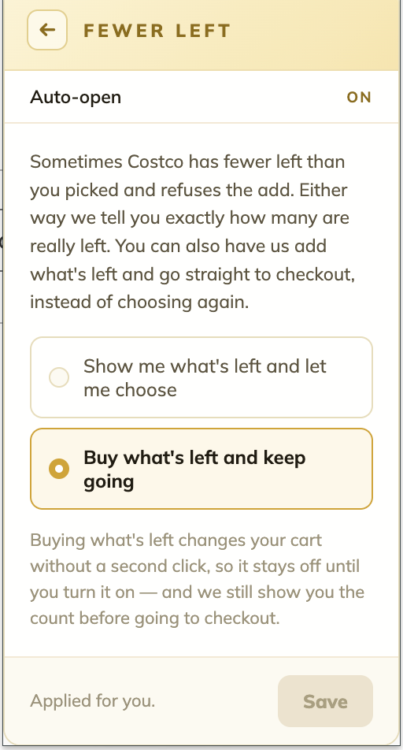
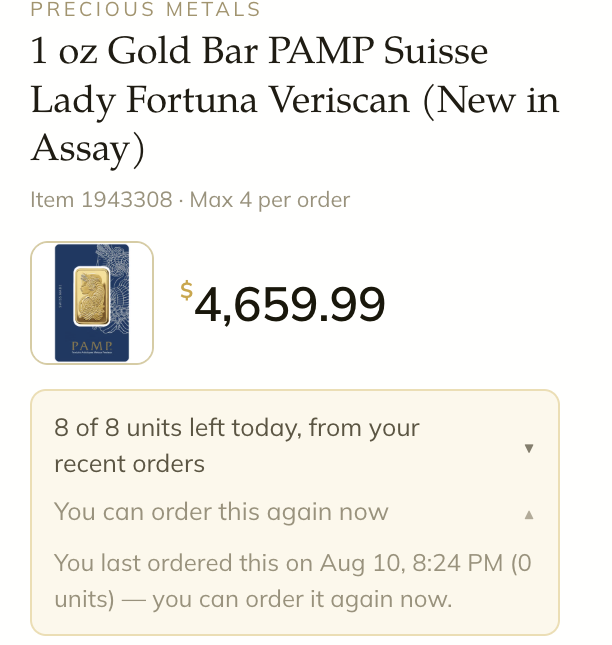
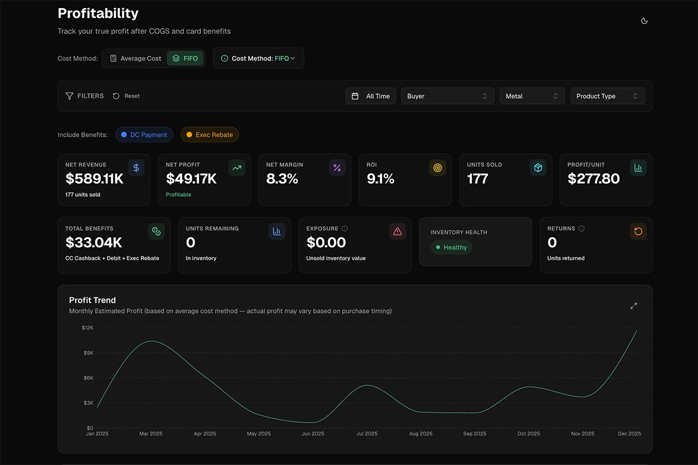

Costco gold restocks
don't last long.
Don't spend those valuable seconds figuring things out. Everything you need to buy Costco gold and precious metals is already on the page — restock to purchase in just two clicks.
Already subscribed? Add to Chrome · Add to Firefox

Four things it buys you
Be on the page, not chasing an alert
The restock reaches you as an open product page, ready for you to take action. No alert to notice, find, click and then wait on a browser switch. Auto-open is Chrome only.
Know if it's profitable before you buy
Costco's markup over spot, the item's own price history, and what precious-metal buyers pay for it today.
You decide what's worth an alert
Which items you track, which margins are worth acting on, which buyers you compare against, and when you want to hear about any of it.
No surprises at the checkout screen
Quantity limits tracked, a cart that won't sweep in old items, and your cards encrypted on your own machine.
Detect, decide, buy, checkout, own
Five moments in a restock. Here is what the extension does in each one. Click any screenshot to enlarge.
Only the restocks that are worth your money.
Being alerted to every restock is its own kind of noise — each one costs you time to work out whether it is even a deal for you, and some restocks are gone in seconds. You build the watch lists in your dashboard — the items you actually want, at the margins that actually work for you — and the extension only ever acts on those. Every restock it surfaces or opens is one you already decided was worth buying.
The panel keeps the last 24 hours behind it too, with price, premium and payout on each row — useful for reading how often something comes back, once the rush is over.
Auto-open: a restock matching your tracked watch lists opens its own product page unattended — three seconds sooner, on average, than noticing an alert, clicking it and waiting for the tab. Quiet hours, a cap on how many open at once, and auto-close for tabs you never looked at.
Container fan-out: one click opens the restock in every Costco account you keep — a tab each, all loaded. No juggling a second browser to hold a second account, and no signing out and back in while the stock disappears.

Your rules, not ours: alerts fire on the SKUs that clear the payout and margin you set.

Payout Match or Restock Match: the custom alerts that cleared your rules — the same restocks the extension surfaces and auto-opens.

Auto-open, live: the alert fires and both matching restocks open their own tabs. Nobody touched the browser, and the panel is already loaded when you get there.
Container fan-out, live: one click on the restock, and every container you ticked opens its own signed-in tab.


The panel read live on an in-stock bar: your daily limit, the premium over spot, this item's restock history, and what three buyers pay today.
Is it a good price? The extension's panel will answer it for you.
Three numbers, stacked on the panel: the current spot price, what this exact bar or coin is worth converted against spot, and Costco's markup on top of it. No per-ounce arithmetic in your head, no second tab.
Underneath sits the item's own record — average markup in dollars, how many times it has restocked and since when, the date it last came back. Together they answer the two questions that decide it: how often does this item restock, and how does today's price compare to what it has cost before?
Then the other half — what precious-metal buyers actually pay for that item today, best offer marked, so your profit is visible before you commit rather than after.
You don't even have to open the item — on the category page, every bar and coin already shows its rate, so you can scan the whole catalogue at a glance.
Pick a quantity, skip the cart, eight seconds.
Pick a quantity, see how much you'll pay ahead of time, and land on Costco's checkout page automatically. Eight seconds on average, measured end to end. One-click to clear your cart and avoid anything else getting swept into your order. Costco's PM daily limits are automatically tracked and shown before you tap, so you find out now, not after the order gets cancelled.
Ask for four when three are left and Costco just throws an error — so you guess again, and again, while the last units go. And that error is the tell: if fewer than four remain, this was a one or two unit restock. The adaptive cart shows exactly how many are left, greys out what would fail, and can take the rest straight to checkout on the first try.




Quantity totals, cart guard, the adaptive cart and daily-limit tracking — click any screenshot to enlarge.
The whole run, live and uncut. Watch the counter: 7.9 seconds from the quantity tap to Costco's checkout, including clearing a leftover cart on the way. Then the vault recognizes the exact card Costco is using and hands over its code. Name and address pixelated.


Your card details, without the wallet hunt.
Save the cards you regularly buy with. They're encrypted with AES-256 behind a password only you know, stored on your own computer, and erased if you remove the extension.
At Costco's checkout the extension recognises the card already on file and copies its security code straight to your clipboard. Paste, place the order, done. Paying with a different card? Pick it from the dropdown and the card number is copied for you, with the expiry date and security code right there to read off as you go.
The position, not just the purchase.
Send your precious-metal orders to your Restock Bot Alerts dashboard in one click, for as many Costco accounts as you have. Track your purchases, rewards, sales, profit and margin, and keep tabs on your business' health from your personal dashboard.
Net profit after COGS and card benefits, margin and ROI, profit per unit, what's still in inventory and what it's exposed to — the numbers the extension was collecting for you all along, in the place you actually review them.


Above: the export dialog in the extension. Below: the same orders, in your dashboard's Profitability tab.
Two browsers, two builds, on purpose
Two builds, each one maximising what its browser does best.
Chrome
THE AUTOMATION BUILDPick this if you want the restock to reach you while you're doing something else.
- Auto-open & Web push, so a matching restock opens its own product page, unattended
- Quiet hours, a cap on simultaneous tabs, auto-close for pages you ignored
Firefox
THE MULTI-ACCOUNT BUILDPick this if you run several Costco accounts and want all of them opened at once.
- Container fan-out: one click opens the restock in every account you keep
- Pages and wish lists land in the account you're already browsing
Running both is fine, and plenty of people do. Pick the flow that best suits you.
Everything it does on Costco's precious metals pages
What it does, which browser has it, and which plan unlocks it.
| CAPABILITY | WHAT YOU GET | CHROME | FIREFOX | PLAN |
|---|---|---|---|---|
| DETECT | ||||
| Watch-list targeting | The extension only acts on the items and margins you track in your dashboard — not on everything Costco restocks. | ✓ | ✓ | Gold |
| Restock feed | The last 24 hours of restocks with price, premium and payout, and an unseen count on the toolbar. | ✓ | ✓ | Gold |
| Auto-open the drop | Restocks matching your tracked watch lists open their own page unattended, with quiet hours, tab caps and auto-close. | ✓ | — | Gold |
| Web push | The drop still reaches you with the tab closed and the browser in the background. | ✓ | — | Gold |
| Container fan-out | One click opens the restock in every Costco account you keep — a tab each, all loaded. | — | ✓ | Gold |
| DECIDE | ||||
| Premium over spot | Live rate per troy ounce, this item's value at that rate, and Costco's markup worked per item. | ✓ | ✓ | All plans |
| Premium & restock history | Average markup, restock count and last restock date over the window you choose — present even when the item is sold out. | ✓ | ✓ | All plans |
| Category-page data | Gold and silver rates on the Precious Metals listing, with a quantity and running total under every item — read the whole category before opening anything. | ✓ | ✓ | All plans |
| Sold-out item data | Costco's page shows nothing when an item is out of stock; the panel still has last price, premium and restock frequency. | ✓ | ✓ | All plans |
| Buyer payouts | What precious-metal buyers pay for that exact item today, with the best offer marked. | ✓ | ✓ | All plans |
| BUY | ||||
| Quantity → checkout | Quantity buttons with running totals on product and category pages; the cart step is skipped. ~8s end to end. | ✓ | ✓ | All plans |
| Adaptive cart | On low stock: how many remain, impossible quantities greyed out, and an opt-in that takes what's left. Saves 5s+. | ✓ | ✓ | Gold |
| Cart guard + one-click cart clearing | One-click holds back and warns you when your cart isn't empty, instead of sweeping old items into the order. | ✓ | ✓ | All plans |
| Purchase-limit tracking | Costco's per-day and per-address caps, shown before you tap rather than having your orders cancelled. | ✓ | ✓ | All plans |
| CHECKOUT | ||||
| Encrypted card vault | AES-256 encrypted on your own machine behind a password only you know. At checkout it recognises the card on file and copies its security code; pick another card and the number is copied instead. Encrypted export and selective import included. | ✓ | ✓ | All plans |
| OWN | ||||
| Order export to dashboard | Precious-metal orders sent to your dashboard, tagged with the Costco account they came from. | ✓ | ✓ | All plans |
| Panel preferences | Save to your Costco wish lists, choose where links open, and fold away panel sections you never use. | ✓ | ✓ | All plans |
Questions people actually ask
Does it place Costco gold orders for me?
No. One click adds the quantity you picked and takes you to Costco's own checkout, and stops there. You review and submit the order yourself, every time.
You say two clicks, but also one-click checkout. Which is it?
Both, and they're the same run counted from different ends. One-click checkout is the extension's click: from the restock, it sets your quantity, skips the cart and loads Costco's checkout page — one click, about eight seconds. The second click is Place Order, on Costco's own screen, and that one is always yours. So the whole run from restock to purchase is two clicks, only one of which we make for you.
Does it work on Costco silver and platinum, or just gold?
Gold and silver alike: premiums, restock history and buyer payouts work the same on both. Platinum isn't covered yet — the groundwork is in place and it's on the roadmap.
Do I need a Restock Bot Alerts subscription, and which plan?
Yes — the extension comes with a Restock Bot Alerts subscription and signs in with a one-time code from your account. Everything on the product and listing pages works on any plan: premium over spot, history, buyer payouts, quantity → checkout, limit tracking, the card vault, order export. The restock feed, auto-open, container fan-out and the adaptive cart need the Gold plan.
Does it need my Costco password, and what leaves my computer?
It never asks for your Costco password — it works inside the session you're already signed in to, and only on costco.com. Nothing about your browsing leaves your machine. The one thing that is ever sent anywhere is an order export you trigger by hand, and even then the filtering to precious metals happens on your own computer first, so nothing else in your order history is included.
How are my saved cards protected?
They're encrypted with AES-256 — the same standard banks, password managers and government systems use — behind a password only you know, and stored on your own computer, never on our servers. The vault stays locked until you unlock it, and removing the extension erases it. At checkout, one click copies a single value to your clipboard for you to paste, then clears it about ninety seconds later. It never fills the payment form. If you move browsers, you can export the vault as an encrypted file and choose which cards to bring across.
Can I use both browsers, and multiple Costco accounts?
Both, on one subscription — and a lot of people do exactly that: Chrome watching for the drop with auto-open, Firefox holding the accounts. Multiple Costco accounts work anywhere, but Firefox is where they shine: keep each account in its own container and one click opens the restock in all of them at once. Order export tags every order with the account it came from, so your numbers never blur together.
The alerts, the dashboard and the payout data behind it.
The extension is the part that lives on costco.com. Behind it sits the rest of the subscription: the online restock alerts that find the drops, in-store inventory data and warehouse alerts for the items sitting on shelves near you, the dashboard that tracks what you bought and what it's worth, and the buyer payout data that tells you where to sell. One subscription covers all of it.
See the full suiteInstall it now and be ready for the next restock.
636 gold restocks came and went in July, and so many of them were gone in just a few seconds. Subscribe, install, sign in with a one-time code and take your online Precious Metals buying to a whole new level!
Subscribe & get accessAlready a subscriber? Install the extension:
Installs from the official stores · runs only on costco.com